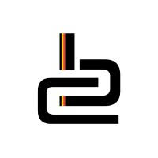
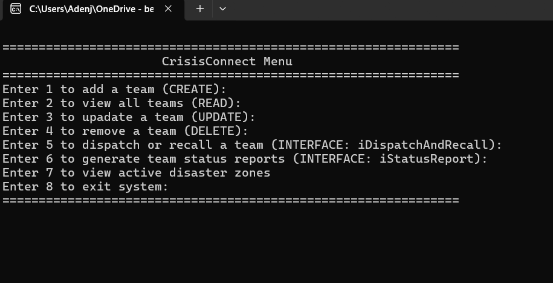
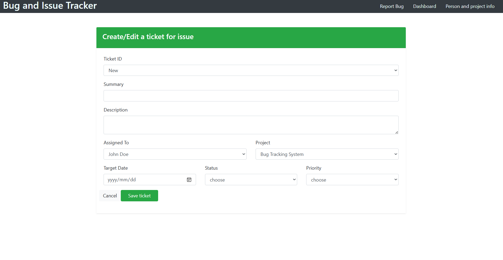
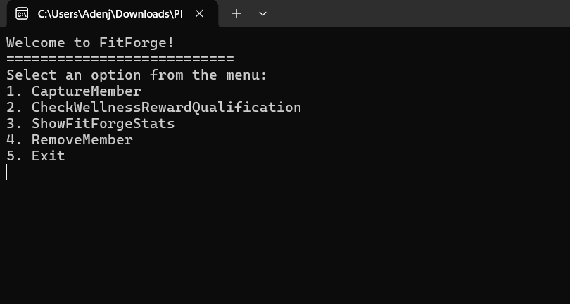
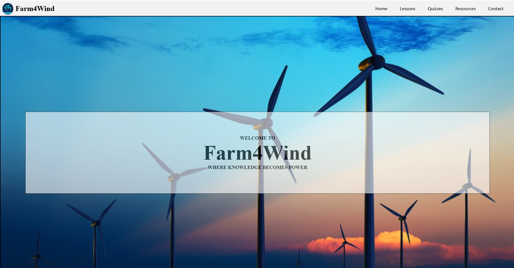

I'm a full-stack developer passionate about crafting responsive user interfaces, building modern web experiences, and deploying scalable, cloud-hosted solutions.
Degree
BComputing
Software Developer / Cloud Engineer
I'm a full-stack developer passionate about crafting responsive user interfaces, building modern web experiences, and deploying scalable, cloud-hosted solutions.
Degree
BComputing

Belgium Campus ITVersity: Bachelor of Computing years: 2025-2028
Motivated Bachelor of Computing student at Belgium Campus ITVersity with a strong interest in software development, web technologies, and cloud computing applications. Quick to learn new tools and frameworks, with hands-on personal project experience across web, backend, and desktop applications. Seeking opportunities to apply and grow my technical skills in a professional software development environment.
Languages
C#
MySQL
Cloud and tools
Foundations
Core strengths
Projects

A multi-threaded C# console application for real-time disaster response coordination. Features asynchronous dispatch management, background emergency alerts, custom exception handling, and thread-safe data logging.

A responsive web-based issue tracking system built with JavaScript and Bootstrap. Enables full lifecycle management for software bugs with priority tracking, user assignment, and persistent browser storage.

A modern fitness management platform designed to track workout regimes, manage client profiles, and streamline exercise tracking through an intuitive interactive user interface.

An educational static web application built with HTML5 and CSS Grid exploring renewable energy concepts. Features structured interactive lesson modules, knowledge testing quizzes, and academic references.
Experience

Gained hands-on, real-world software development experience during a short-term (1 month) placement at Pepla Software Solutions 2025. Where they had asked me to use React to build a timesheet plugin in Microsoft Azure, which they could then save on costs and then in the future are going to sell it to other companies.
Character
Discpline
Effort
Respect
.JPG)
Self control
Consistency
Let's build something.
Open to web development opportunities, cloud projects and, freelance collaborations.